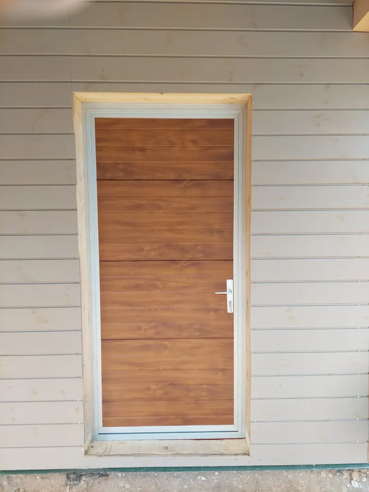
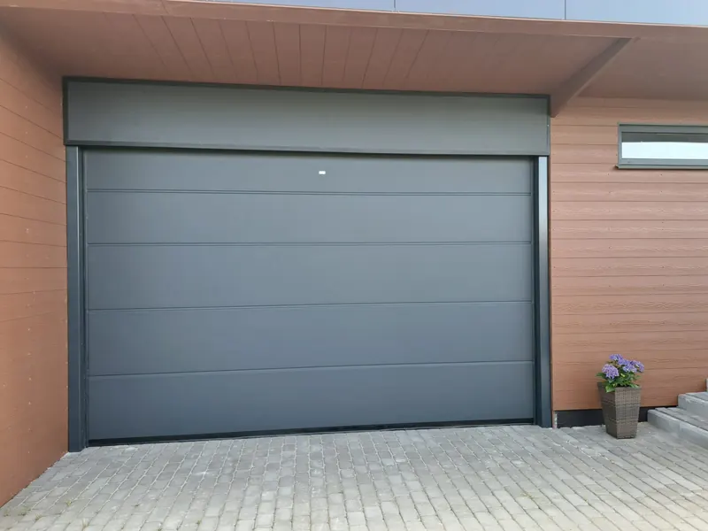
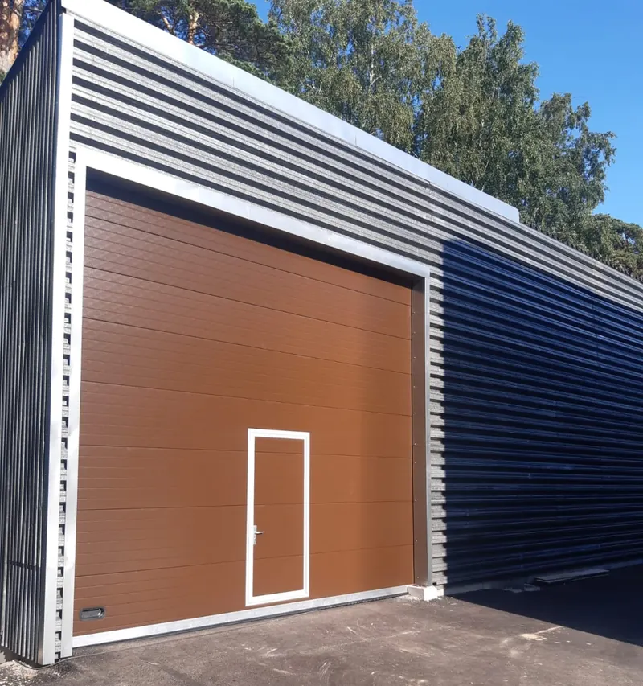
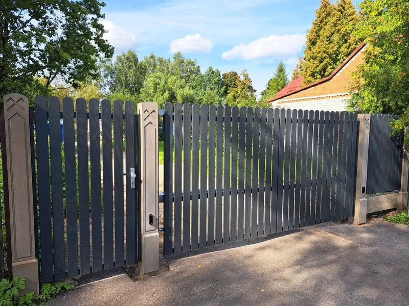
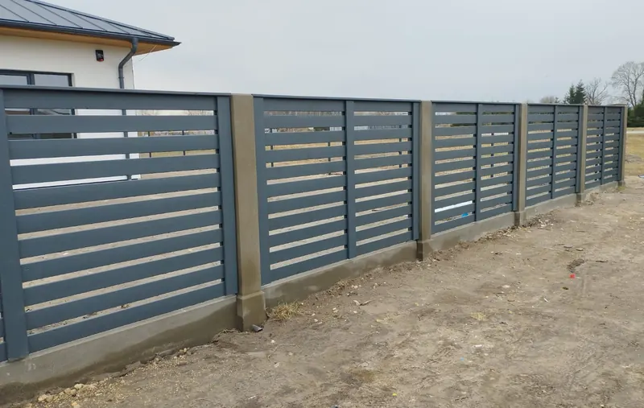
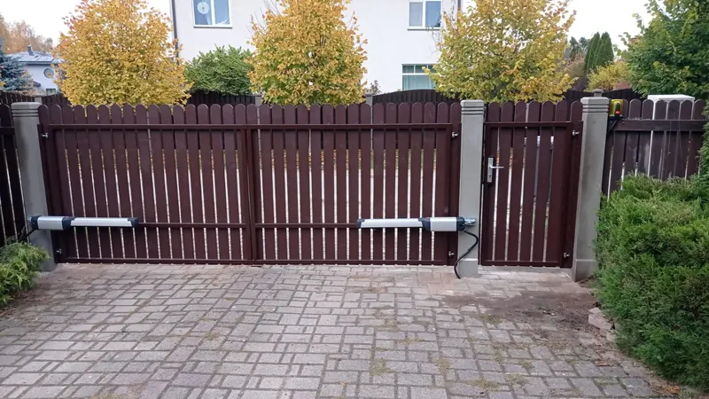

Durvis
Ārdurvis, dienesta un personāla durvis no tā paša 40 mm sendvičpaneļa, no kura darinām vārtus.
Durvis, paceļamie, bīdāmie un veramie vārti, žogi un vārtu automātika. Ražojam Nītaurē, strādājam visā Latvijā.
Veicam arī vārtu apkopi un remontu. Pieteikt apkopi vai remontu

Katram veidam ir sava lapa ar mūsu objektu fotogrāfijām.

Ārdurvis, dienesta un personāla durvis no tā paša 40 mm sendvičpaneļa, no kura darinām vārtus.

Sekciju vārti garāžām un ražošanas ēkām: ar iebūvētām durvīm, logiem vai panorāmas stiklojumu.

Iebraucamie vārti pagalmam un teritorijai, ar vārtiņiem un automātiku.

Divviru vārti iebrauktuvei, kā arī garāžām, kurās paceļamos vārtus uzstādīt nevar.

Jebkura veida žogi: 3D paneļu, koka, štaketa un horizontālie žogi. Augstums un krāsa pēc izvēles.

Tikai itāļu BFT automātika. Vārtus atverat ar pulti, pogu, viedtālruni vai zvanu.
2008
Vārtus ražojam kopš 2008. gada
26
Pilsētas, kurās strādājam
176
Pagasti, kuros strādājam
2gadi
Garantija paceļamajiem vārtiem
SIA „Elks AK“ strādā ar zīmolu „Vārtu pasaule“. Uzņēmums reģistrēts 1992. gada 29. septembrī un atrodas Nītaurē, Cēsu novadā.
Durvis un paceļamos vārtus darinām no 40 mm bieza sendvičpaneļa. Paceļamo vārtu paneļi ir no Itālijas (Italpannelli), furnitūra no Nīderlandes (FlexiForce).
Paceļamo vārtu standarta krāsas: krēmbalta (RAL 9001), gaiši pelēka (RAL 9006), brūna (RAL 8014) un antracīta (RAL 7016). Pieejama arī koka imitācija, un pēc pieprasījuma krāsojam jebkurā RAL tonī.
Vārtu automātikai izmantojam tikai itāļu BFT iekārtas.
Mūsu vārtiem un durvīm dodam garantiju un veicam apkopi. Paceļamajiem vārtiem garantija ir 2 gadi.
Uzstādīšana, serviss, apkope un remonts visā Latvijā.
Galvenokārt
Arī citviet Latvijā
Daži no mūsu darbiem. Vairāk fotogrāfiju ir katra veida lapā.
Norādiet veidu un aptuveno izmēru. Mēs sazināsimies un precizēsim detaļas.
Ziņa sagatavota
Labi vārti: drošība sev un tuvajiem.
{kind=link}
{kind=link}
{kind=link}
{kind=link}
{kind=link}
{kind=link}
{kind=link}
{kind=link}